Overview
A local business with nationally recognized Ice cream, Kelley Country Creamery is more than just a factory.
KCC is a farm with sustainable practices and homegrown flavors.
Problem
The local brand is recieving national attention and needs an attractive and scaleable brand identity.
Solution
Repackage & repackage to create a fun and fresh image for the nationaly acclaimed ice cream brand.
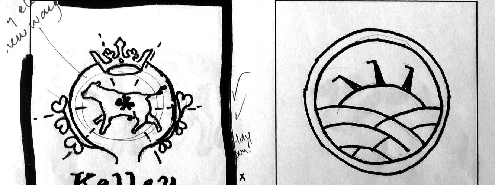
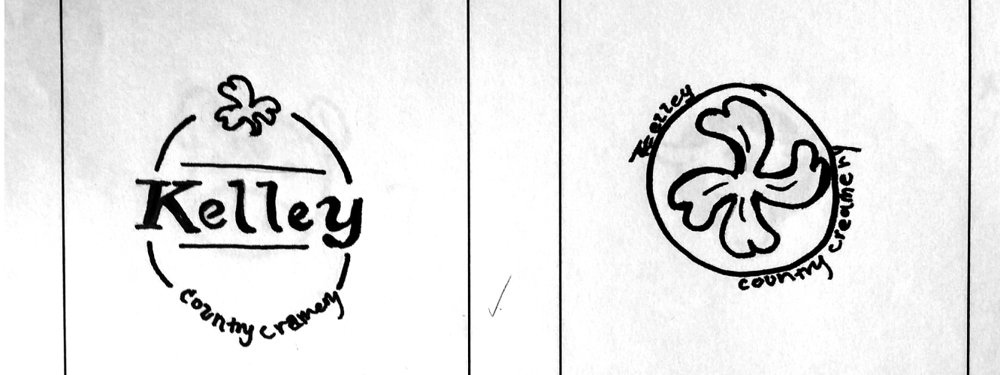
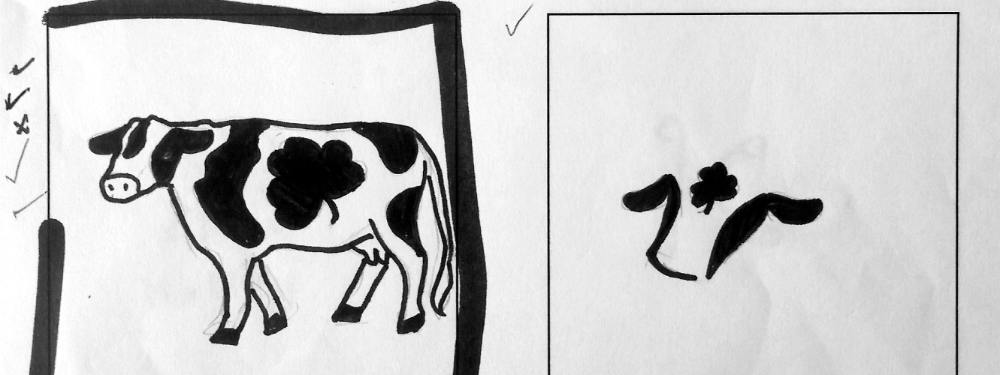
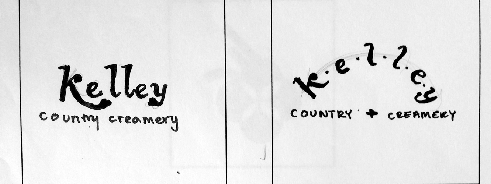
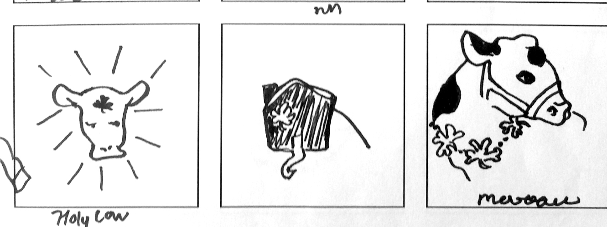
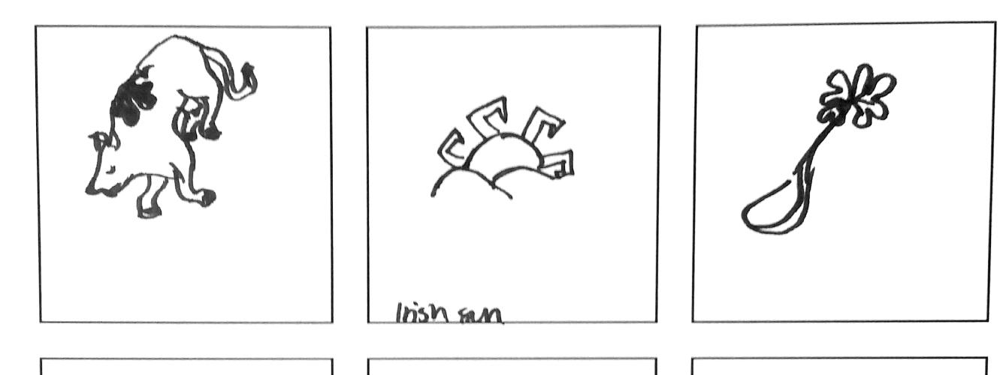
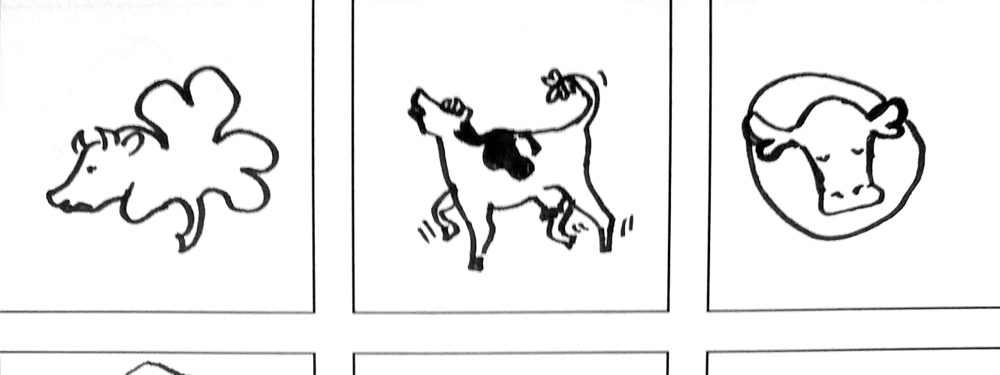
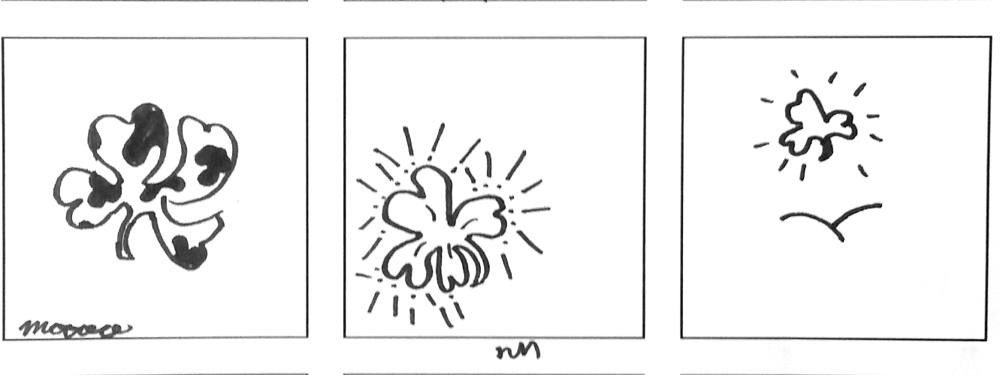
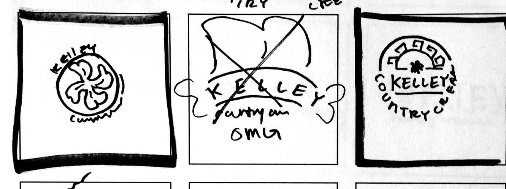
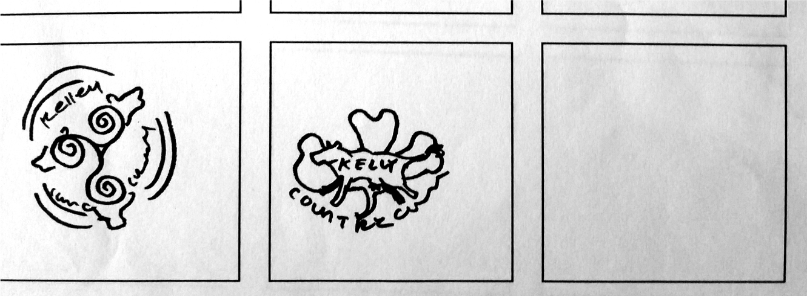
Finding an Identity
Creating a mark for Kelley Country Creamery that felt unique and rich was a journey.
Fusing celtic symbols, tradional creamery/ice cream shop imagery, and adding the Kelley's
classic green, a new mark is formed
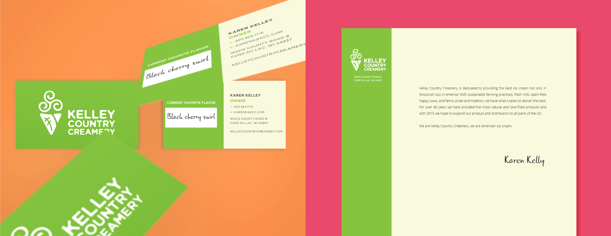
Paper System
Natural, bold, and simple. The paper system is sophisticated yet playful.
The business card allows for the holder to change their favorite flavor since many flavors are seasonal
and depend on local resources.
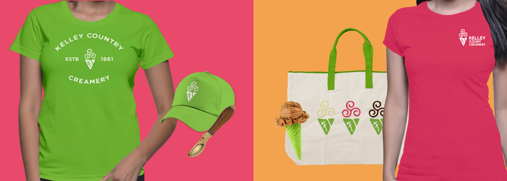
Kelley Spirit.
Merchandise for scoopers and fans alike.
Containing the Yum
The Kelley Country packaging was made with sustainability in mind.
Not only are shoppers able to see the delious ice cream inside, they are also able to bring their KCC bucket in for a discount if
brought to the creamery empty. If a return visit isn't planned then they could easily be reused or recycled.